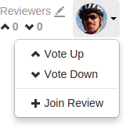
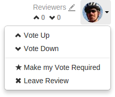

Responsibility
Initially, code reviews have no reviewers. Code review authors can designate
users as reviewers by including
@mentions for each desired
reviewer, @*mentions for each required reviewer, or by
using the Edit Reviewers dialog which allows reviewers
to be added, removed, and to make each reviewer's vote required or optional.
Other users can show their interest in participating in the code review by clicking their avatar in the Reviewers area of the code review and selecting , or by commenting on a review or one of its files. Once a user shows such interest, they are added to the review's list of reviewers and share in the responsibility of performing the code review. Later on, reviewers can change whether their vote is required or optional, or leave a review (perhaps to prevent further notifications).
Looking at a review queue can help you determine which reviews have likely
not been started, using the filter. Once
a review has reviewers, it is considered to be active and appears in the
review queue with the state Has Reviewers.
Review participation is advisory by default, and is used to inform your team that a code review is being conducted. The disposition of the review is reflected in the review's current state, the badges that may appear over each reviewer's avatar, and any comments reviewers might add.
Moderators
A project moderator is a user assigned to moderate reviews for a specific branch associated with a project.
When Only Moderators can approve or reject reviews is set for a project branch, changing the state of any review associated with the moderated branch is restricted as follows:
-
Only moderators can approve or reject the review. Moderators can also transition a review to any other state.
-
The review's author, when she is not a moderator, can change the review's state to Needs Review, Needs Revision, Archived, and can attach committed changelists.
Normally, the review's author cannot change the review's state to Approved or Rejected on moderated branches. However, authors that are also moderators have moderator privileges, and may approve or reject their own review.
When
disable_self_approveis enabled, authors who are moderators (or even users with admin privileges) cannot approve their own reviews. -
Project members can change the review's state to Needs Review or Needs Revision, and can attach committed changelists. Project members cannot change the review's state to Approved, Rejected, or Archived.
-
Users that are not project members, moderators, or the review's author cannot transition the review's state.
-
For the review's author and project members, if a review is not in one of their permitted states, for example if the review's state is Rejected, they cannot transition the review to another state.
These restrictions have no effect on who can start a review.
Required reviewers
Reviews can optionally have required reviewers. When a review has required reviewers, the review cannot be approved until all required reviewers have up-voted the review. If the review is associated with a project that has assigned moderators, even the moderators cannot approve the review without up-votes from all required reviewers (but they can reject the review).
Required reviewers are expected to take greater care while performing a review than non-required reviewers, as their votes affect whether a review can be approved or not.
To edit the reviewers for a review, and to change whether a reviewer is required or not, see Edit reviewers.
Note
If a review involves a branch with assigned moderators, only a moderator can approve the review, even if all required reviewers have up-voted the review.
Add yourself as a reviewer
-
Visit the review's page.
-
Login, if you have not already done so.
-
 Click your avatar in the Reviewers area of the review display, which should be greyed out since you are not yet a reviewer. A dropdown menu appears.
-
Select . Alternatively, you can select or if you approve or disapprove of the review, respectively; either will cast your vote and make you a reviewer.
You avatar is no longer greyed out, and you are now a reviewer.
Remove yourself as a reviewer
-
Visit the review's page.
-
Login, if you have not already done so.
-
 Click your avatar in the Reviewers area of the review display, which should not be greyed out since you are already a reviewer. A dropdown menu appears.
-
Select .
You avatar is now greyed out, and you are no longer a reviewer.